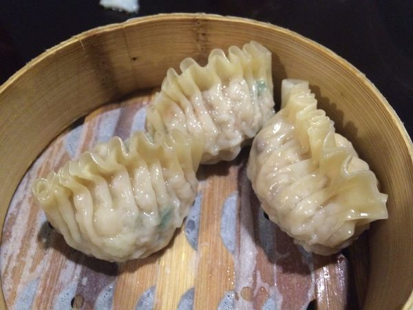

2.取一大盆，將作法1的赤肉與鹽一起混合， 並摔打攪拌至肉質呈現黏性膠狀，即加入蝦仁繼續摔打攪拌。
3.待作法2的蝦仁攪拌至有黏性後即可加入味精、糖拌勻， 再放入作法1的肥肉及太白粉、香油、胡椒粉充分拌勻，最後加入作法1的剩餘材料， 一同拌勻至黏性出膠狀即為餡料。
4.取一片大白皮，包入作法3約30公克餡料，對折後用手捏成雞冠形，重複動作至材料用畢。
5.將作法4的魚翅餃放入蒸籠內，以大火蒸6分鐘即可。

小籠湯包 水晶蝦餃 蟹黃燒賣 心得感想